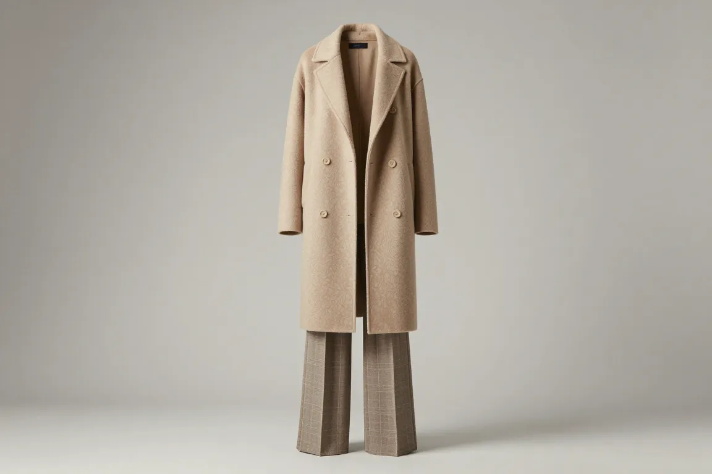

мода · 2006–present · также: Скрытое богатство, Одежда старых денег, Роскошь без логотипа, Сдержанная роскошь
Одежда без логотипов и с высокой ценой 2000-х и позже. Кашемир, лоден и тонкая шерсть нейтральных цветов, с идеальным кроем и ручной отделкой. Цена в ткани, а не в знаке.

Главная идея
Настоящая роскошь тиха. Она видна в касании ткани и посадке кроя, и только знающий человек её заметит.
Принципы дизайна
Не ставьте логотип и монограмму на внешнюю сторону вещи.
Выбирайте ткань высшего сорта: кашемир 14–16 микрон, тонкую шерсть, лоден и шёлк.